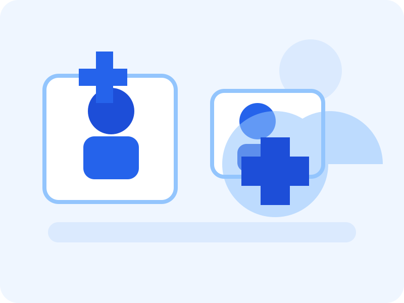

General Health Checkups
Routine consultations designed to support prevention, early care, and better long-term wellbeing.
Modern health website prototype
Crown Health Clinic is a modern front-end prototype for a community-focused health service. It highlights preventive care, wellness support, and simple digital access for patients across mobile, tablet, and desktop devices.

What we offer
Our prototype demonstrates a professional health website interface that supports clear service discovery, trust, and user-friendly communication.
Routine consultations designed to support prevention, early care, and better long-term wellbeing.
Personalised guidance around lifestyle, nutrition, sleep, and everyday healthy habits.
Flexible online support for patients who need convenient access to care and advice.
Why choose us
This front-end prototype focuses on intuitive navigation, readable content, and accessible interactions. It reflects how a digital agency might validate a clinic website concept before adding booking systems or backend features.
Patient feedback
“The website feels calm and trustworthy, and it is very easy to find the right service.”
“I like how clearly everything is explained, especially on mobile where the layout still feels simple.”
“The enquiry form is straightforward and the design gives a professional first impression.”
Need support?